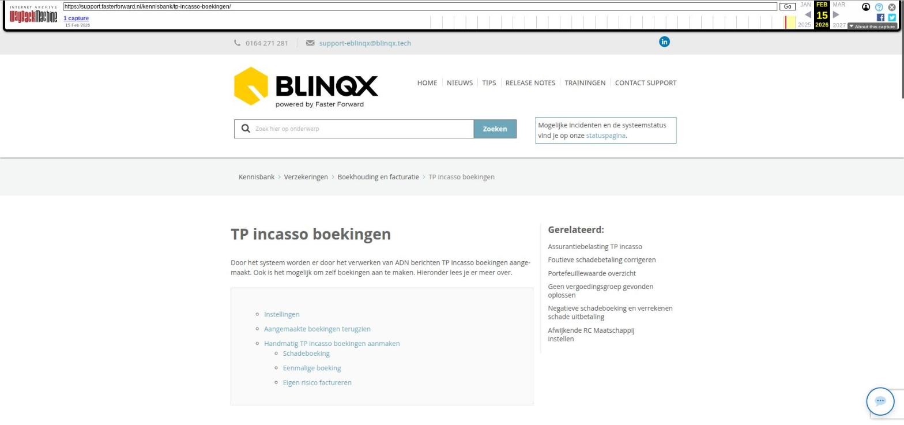

Documenten automatisch censureren

Tekstinhoud
Documenten automatisch censureren
Beschikbaar in: eBlinqx niet in Elements
Sommige documenten moet je zonder pasfoto en BSN naar geldverstrekkers sturen. Denk aan paspoorten en identiteitsbewijzen. Deze kunnen gemakkelijk automatisch gecensureerd worden, zodat je dit niet meer handmatig met de PDF-bewerker hoeft te doen. Dit scheelt tijd. Let op: deze functionaliteit is alleen beschikbaar voor eBlinqx.
Instellen welke documenten automatisch gecensureerd moeten worden
Moment van automatisch censureren
BSN en QR code gecensureerd
Origineel document
Handmatig een document automatisch laten censureren
Instellen welke documenten automatisch gecensureerd moeten worden
In de module 'Soort documenten beheer' staan alle soort documenten. Hier kan je per soort document aangeven of deze automatisch gecensureerd moet worden bij het uploaden in eBlinqx. Dit doe je door te klikken op het wijzigingsicoon achter het betreffende document. Vervolgens vink je 'Automatisch censureren bij toevoegen' aan of uit. Wanneer je het aanvinkt, wordt het document automatisch gecensureerd bij toevoegen.
Moment van automatisch censureren
Documenten worden automatisch gecensureerd bij het uploaden van het document in eBlinqx. Dit kan op diverse plekken zijn, bijvoorbeeld:
Koppelen vanuit een e-mail
Uploaden vanuit Uwkluis
Koppelen aan een stuk
Stukkenlijst samenvoegen
Ontvangen via HDN
Toevoegen via het tabblad Documenten
Via de API
Documenten koppelen vanuit inbox scan
BSN en QR code gecensureerd
Bij het automatisch censureren wordt het BSNen de QR code zwart gemaakt. Let op: dit werkt alleen voor Nederlandse identiteitskaarten, niet voor buitenlandse documenten.
Origineel document
Het originele document met daarin het BSN nog zichtbaar wordt opgeslagen onder het tabblad Documenten. Zo heb je zowel het gecensureerde document als het originele document in het dossier staan. Het originele document krijgt de naam van het document met daarachter '- origineel'.
Handmatig een document automatisch laten censureren
Het kan gebeuren dat je documenten hebt waarvan je niet standaard wilt instellen dat deze gecensureerd worden, maar dat je dit in een enkel geval wel wilt doen. Het is dan mogelijk om het automatisch censureren handmatig op te starten. Hiervoor ga je in het dossier naar tabblad Documenten. Hier zoek je het betreffende document op en klikt op het wijzigingsicoon. Via de knop 'Automatisch censureren' kan je het BSN en de QR code zwart maken. Let op: via het pijltje naast deze knop kan je ervoor kiezen om het originele bestand te behouden. Klik je direct op 'Automatisch censureren' dan wordt het origineel niet behouden.
Wanneer eBlinqx bezig is met het automatisch censureren komt op de knop 'Bezig met censureren' te staan. Deze kan je dan niet meer aanklikken.
Laatste update: 15 oktober 2025
Was deze informatie nuttig?
Ja Nee